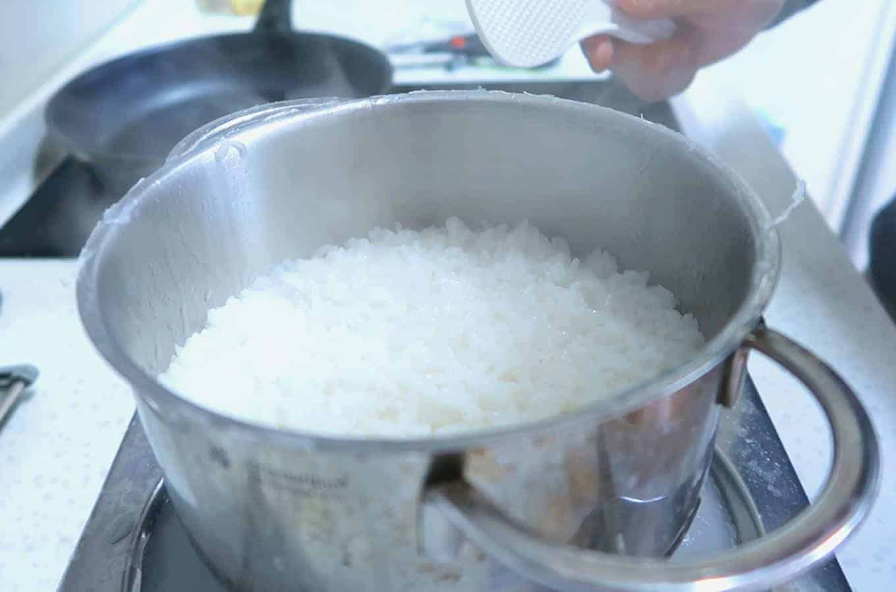

Sticky White Rice

Now cooking rice may look easy no? Pour rice into a pot, with a few scoops of water and just let it cook. But question: How consistently do you make perfect, fluffy rice?
Cooking rice is tricky, especially if you are new to Korean cooking. Today, I will teach you an easy way to get delicious results, consistently!
Ingredients
- 1 Cup Short White Grain Rice
- 1 Cup Water
Directions
- Use any cup and fill it up to the brim with rice.
- Then pour the rice into a pot (or your rice-cooker bowl). Rinse the rice in cold water. Then pour out the residual water. Rinse and pour-out the water 4-5 times or until the residual water becomes clear.
- Then re-fill the pot with cold water and let the rice soak for 30 minutes.
- After 30 minutes, pour out the residual water from the pot - try your best not to lose any rice grains as you pour out the water
- Then use the same cup from Step 1 - and fill it up the brim with water. Carefully pour the water into the pot with the rice (or rice cooker bowl). Now, you should have a 1:1 ratio of water-to-rice in the pot.
- If you have a rice cooker, place the bowl in the cooker and turn it on. Then you're finished.
- If you do not have a rice cooker, simply place a lid on the pot (important!). Then put it on the stove - on high heat and bring it up to a boil.
- When you hear the pot boiling, reduce the heat to a medium. Let it cook for 5 minutes (keep lid on).
- Then reduce heat to a low. Let it cook for 10 more minutes (keep lid on).
- hen turn off the heat. Let it rest for 5 more minutes (keep lid on).
- Total cooking time should be roughly 20-25 minutes.